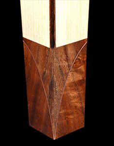
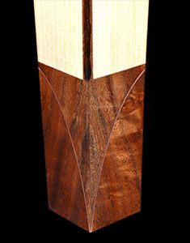

This Koa table is expanded with two leaves installed, it will seat 12 comfortably. The four additional diners sit outside the legs, which don't move. This is a European stile construction that avoids cutting the apron at the center, which greatly weakens the supporting structure, guaranteeing the table will eventually sag at the center.

Here the table is closed, with the two leaves stored inside the table. The legs are in Hard rock maple. They are a matched pair of bent laminations made of 30 layers of 1/10" thick sliced veneer. One of the lams is Walnut, forming the deep "V", where the two halves of the leg meet at the foot.
Table in the open position
 

Copper inlay between the rim and the Koa top. A 1/32" polished copper inlay really lights up the rim and field seam. The reflectivity of the metal really makes it stand out and compliments the colors of the two different woods.
The Walnut foot also has the copper inlay. The plunging copper "V" echoes the design of the legs with its Walnut curved lamination "V".
Interested in this piece? Contact Don for pricing and availability.